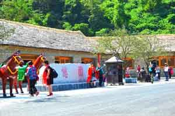
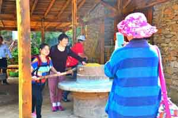
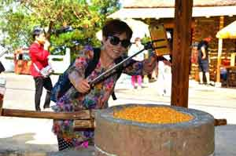
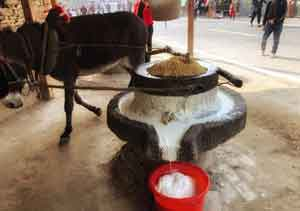
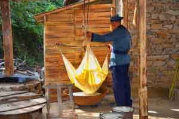
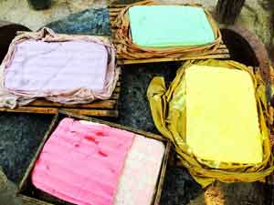

我国是最早种植大豆的国家，也是最早利用大豆制成豆腐制品的国家。 说到豆腐的起源，可以追溯到汉代。两汉时，皇子刘安，一直在研究长生不老之道，重金请了招纳了数千的方术之士在进行谈仙论道，著练丹书，用山中清泉水磨制豆汁，用豆汁培育丹苗。豆汁与石膏、盐起了化学反应，形成鲜嫩绵滑的白色物状，这就是当时豆腐的雏形，结果有人试吃了一下，味道不错，然后与术士反复试验，就把豆腐给研制出来了。
而豆腐也因其物美价廉、营养丰富的特点广受人民喜爱，甚至流传到世界各地。
 
 
七峰山生态旅游区在景区景点——民俗博物馆内，还原了古人传统“石磨豆腐”全套设备，现场纯手工制作的豆浆、豆腐花、香汁豆腐等小吃，广受游客好评与追捧。因为完全是古法炮制，无任何添加，加工出的豆制品口感优良，古色古香，几乎是每一盘豆腐出锅后，都被在场游客抢食一空。作为吃货的小编为了吃到一口热豆腐，每次简直是抛弃一本正经的形象蜂拥而上啊。


为感谢广大游客对七峰山的支持与喜爱，也为了向中华传统文化致敬，景区特在今年双十 一之际，举办“七峰山生态旅游区第一届豆腐文化节”活动。欢迎大家来集体“撒欢儿”，尤其是吃货，千万不要错过了这次机会咯。
因为这次活动期间，景区特意准备了大量的豆腐美食：除去传统的的豆浆、豆腐花、香汁豆腐等，还有五彩冰淇淋豆腐、豆腐丸子、麻辣豆腐干、独创五香豆腐膏等特色小吃。所有食材均采用七峰山石磨豆腐，让您体验一把原汁原味的“豆腐文化”。
今日立冬，立冬之后： 帘卷风寒池水凉， 山松依旧麦芽黄。 霜后飞雪谁人忆？ 春花落尽夏月裳。 而立冬之后的七峰山，别有风情。